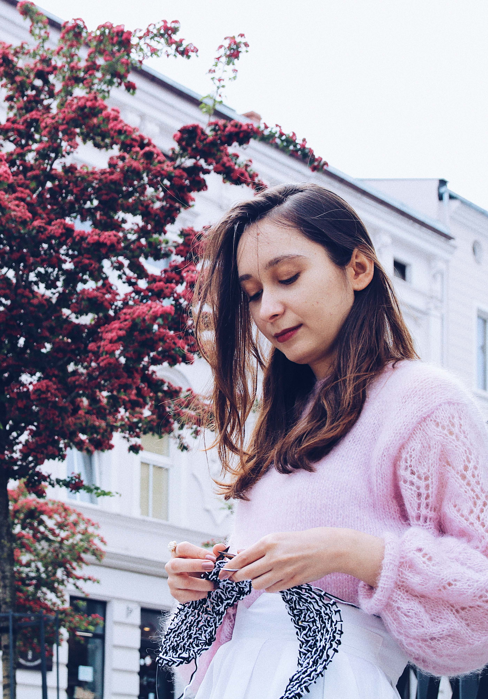
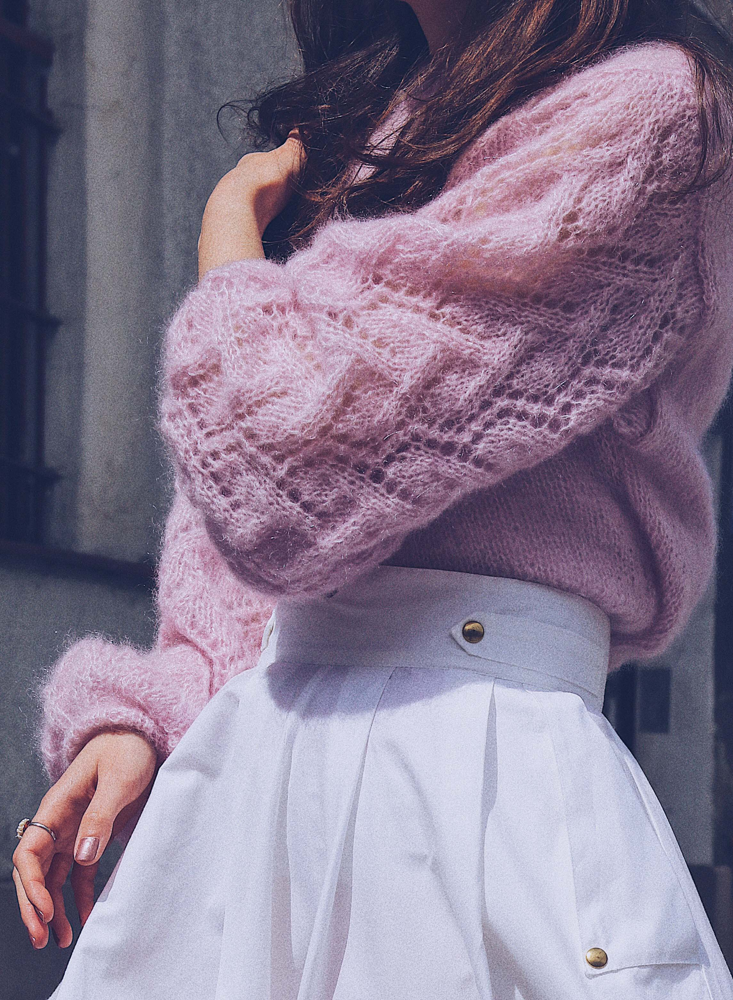

Moja przygoda z projektowaniem zaczęła się od pasji, która przerodziła się w życiowy cel i ścieżkę zawodową. Pierwsze kroki w tym kierunku postawiłam dzięki mojej mamie, która zaraziła mnie miłością do tworzenia ubrań oraz przekazała techniczne umiejętności, takie jak umiejętność szycia na maszynie, robienie na drutach i szydełku.
Później pojawił się staż w LPP, a po nim, pod bacznym okiem wykładowców Międzynarodowej Szkoły Kostiumografii i Projektowania Ubioru szukałam swojego stylu i drogi w świecie projektowania ubioru. Szkołę ukończyłam z wyróżnieniem w 2019 roku, a kolekcja dyplomowa „Roots” została doceniona przez międzynarodowe jury. Projektowałam dla takich marek jak: Diverse, Kabarday, Cropp.
Nie lubę opisywać swoich projektów. Uważam, że ubranie jako forma przejawu artystycznego powinno mówić samo za siebie. Najpiękniejsze w sztuce jest to, że każdy odbiera ją na swój sposób. Nie chcę nikomu narzucać jak powinien odczytywać moje projekty i jak przeżywać zetknięcie z nimi. Jeżeli, każdy obserwator poświęci chociaż chwilę, w celu odszyfrowania intencji autora, to jest to piękne.